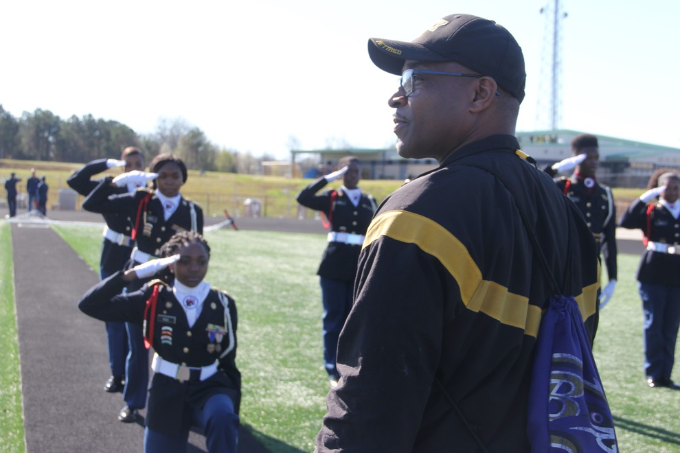

Design Challenge
The process began by identifying what ALOH was all about and how their website should reflect that. The website in its original state wasn't abundantly clear in its purpose and function, so I set out to try to communicate its goals effectively.